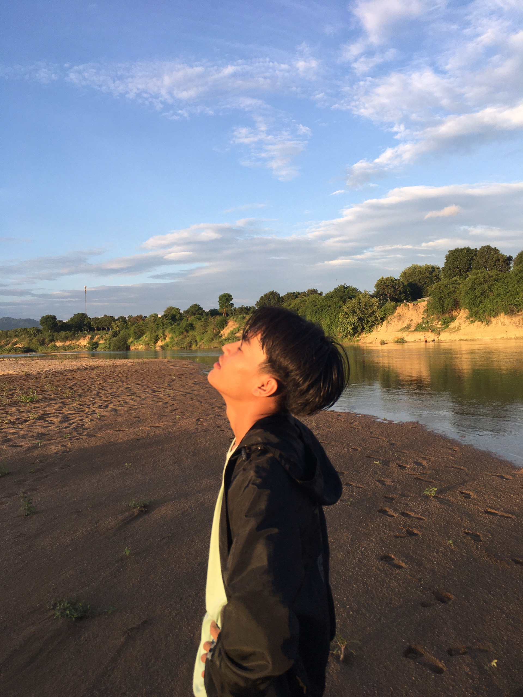

Hello !!! Chào mừng bạn đến với website của mình nhé
Mọi người đừng quan tâm cái câu hỏi xàm trên đó haha, chúng ta cùng thẳng tiến đến vấn đề chính nào.
Web của mình chủ yếu là chỉ giới thiệu sương sương về bản thân mình thôi, chứ vẫn chưa có gì hehe.
Chào mọi người, có lẽ website của mình hơi xấu và hơi phèn xíu :)), mà cũng không sao tại vì mình mới tìm hiểu được 2 ngày hihi, website mình gà như vậy cũng chẳng là vấn đề.
Nhưng mình lại rất vui khi tự bản thân làm ra cái website xấu xí này của mình. Và mình cũng rất welcome các bạn hehe.
Phần dưới là sẽ giới thiệu về mình để các bạn hiểu mình hơn nhé.

GIỚI THIỆU BẢN THÂN
Họ Và Tên: Nay Wĩ
Ngày sinh: 10/05/2000
Sở thích:
Dance
Ăn ngủ
Xem phim
Code xàm
Chơi game (Liên quân, Liên minh huyền thoại)
Hiện tại mình đang là sinh viên năm 3 của trường ĐH Khoa Học Tự Nhiên ĐHQG TP HCM
Nếu các bạn có gì thắc mắc, hoặc muốn hỏi gì mình thì liên hệ mình qua:
Và mọi người có thể follow mình qua:
Tiktok: My Tiktok
Một số video của mình trên tiktok:
Instagram: My Instagram
Youtube: My Youtube
==> Mọi người có hứng thú, nhớ theo dõi mình nha <==
Và mình còn rất yêu thích động vật nữa. Đặc biệt là con mèo. Mèo là một trong những loài động vật được con người yêu thích nhất trên thế giới.
Tổng hợp lại các trang mạng xã hội của mình: Facebook: My Facebook
Youtube: My Youtube
Tiktok: My Tiktok
Instagram: My Instagram
Cảm ơn mọi người đã quan tâm và yêu thích website của mình
hâhhaahaha
Lần cuối mình chỉ muốn hỏi là: